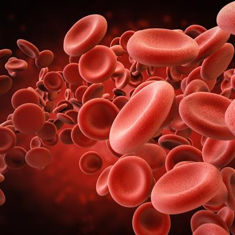

Organi ed apparati
Sono diversi gli organi e apparati che compongono l'apparato cardiocircolatorio.
Il cuore è l'organo centrale dell'apparato circolatorio. Il suo compito è quello di pompare il sangue ossigenato nei vari distretti anatomici del corpo umano, con lo scopo di mantenerli in vita il sangue non ossigenato nei polmoni, affinché lo stesso sangue si carichi di ossigeno.
Il cuore riceve e invia il sangue circolante nel corpo umano, attraverso una serie di vasi sanguigni.
Il sangue umano è un fluido, costituito per il 55% da un liquido noto come plasma e per il restante 45% da cellule meglio conosciute come emociti (letteralmente “cellule del sangue”).
Il plasma è, fondamentalmente, una soluzione contenente acqua, sali minerali e proteine colloidali.

Le arterie sono tutti i vasi sanguigni che trasportano il sangue dal cuore alla periferia (dove per periferia, s'intende la rete di organi e tessuti).
Una caratteristica dei vasi arteriosi, è la loro progressiva riduzione di diametro a partire dal cuore.
In altre parole, mano a mano che le arterie si allontano dal cuore, il loro diametro va riducendosi in maniera graduale.
Gli anatomisti definiscono vene tutti i vasi sanguigni che trasportano il sangue dalla periferia al cuore.
A partire dalla periferia e procedendo verso il cuore, i vasi venosi diventano mano a mano sempre più grandi, esattamente come avviene per le arterie.
Situati alle estremità delle arterie e delle vene, i capillari sono piccoli vasi sanguigni, aventi l'importante compito di consentire gli scambi di gas, nutrienti e metaboliti tra il sangue e le cellule costituenti i tessuti del corpo.
A garantire i suddetti scambi, è la caratteristica parete sottile dei capillari: attraverso questa, infatti, possono passare - sia dall'interno verso l'esterno sia dall'esterno verso l'interno - molecole gassose come l'ossigeno o l'anidride carbonica, ioni di varia natura, sostanze nutritive per le cellule, prodotti di scarto, acqua ecc.